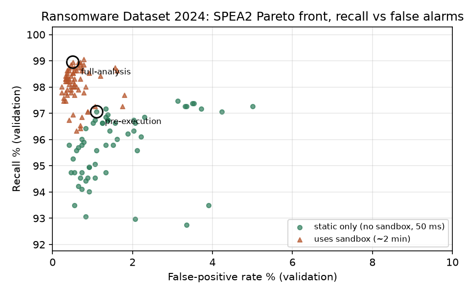

Soft Computing · Project Report
Can ransomware be caught before it runs, and what does that cost in accuracy?
As in our phishing study, the false-alarm rate is optimised alongside these two. It keeps objective 2 well-posed. See Section 4.
Ransomware is malicious software that encrypts a victim's files and demands payment for the key. Hospitals, councils and companies have been shut down for weeks by a single infection.
What makes ransomware different from most malware is that the damage is done the moment it runs. Encryption starts within seconds; by the time a detector has watched the program misbehave, files are already lost. A security tool can judge a program in two ways:
Dynamic features are usually more informative, so speed and accuracy pull against each other. This project applies the method from our phishing study, SPEA2 multi-objective feature selection, to three ransomware datasets. The goal is to find which features are worth collecting, and in particular whether a detector that never runs the file can still catch ransomware reliably.
We use three public datasets chosen to differ in what they measure and in size (13 to 483 features). Only the processed feature tables are used; no malware is ever downloaded.
| Dataset | Source | Samples used | Features | Task |
|---|---|---|---|---|
| MLRan | Onwuegbuche et al., JNCA 2026; Zenodo 23403681 (CC-BY-4.0) | 4,880 | 483 | Ransomware (2,330) vs goodware (2,550) |
| RD2024 | Hussain, Ransomware Dataset 2024; Zenodo 13890887 (CC-BY-4.0) | 15,638 | 148 | 12 ransomware families (4,762) vs benign (10,876) |
| UGRansome | Nkongolo et al., Information 12(10), 2021; Kaggle | 108,941 | 13 | Zero-day "A" (42,561) vs known-signature "S" (66,380) network traffic |
| Dataset | STATIC ≈ 50 ms, before execution | DYNAMIC ≈ 120 s, sandbox run |
|---|---|---|
| MLRan | 223 text strings found inside the file (e.g. getlogicaldrives, .aspack) | 260 behaviours: Windows API calls, registry and file operations, loaded DLLs, sandbox signatures |
| RD2024 | 135 PE-header fields: image base, section sizes, flags, machine type | 13 behaviour counts: registry reads/writes, processes, files created, API calls |
| UGRansome | All features come from network flows (ports, protocol, bytes, address, Bitcoin activity). There is only one tier, so cost is measured as the number of features. | |
The dynamic latency is the default analysis time of the Cuckoo sandbox (120 s). The static figure is a generous allowance for parsing a header or extracting strings. The exact numbers do not matter: with only two tiers, any static cost lower than any dynamic cost gives exactly the same set of best trade-offs, so no sensitivity analysis is needed.
RD2024: the sandbox's own verdict was in the data. The column
processes_malicious alone separates ransomware from benign with AUC 0.996. It is not
a behaviour but the sandbox's judgement, so using it would let the optimiser copy an
existing detector instead of learning one. We removed it together with the four other verdict
columns (*_suspicious, files_malicious, network_threats).
After this, no single feature exceeds AUC 0.95.
MLRan: a third of the test set also appears in training. 320 of 975 test vectors are exact copies of training vectors. We keep the authors' split, because their 483 features were chosen on it, but every MLRan result is also reported on the 655 unseen test rows, which is the honest measure of generalisation.
Can ransomware be detected from the file alone, before it runs? If so, from how few features, and what does skipping the sandbox cost in missed ransomware and false alarms?
As before, the classifier is the instrument, not the subject: a Random Forest is held fixed and we study which inputs it needs. The output is not one detector but the full set of best trade-offs, from which a deployment chooses, for example a pre-execution scanner or a full sandbox pipeline.
| Objective | Definition | Why it matters | Target |
|---|---|---|---|
| f₁ — Detection cost Objective 1 |
Sum of the distinct tiers the selected features need: 50 ms, or 120,050 ms if any dynamic feature is used. UGRansome: feature count | A static-only detector can block the file before it executes; one dynamic feature forces a two-minute sandbox run | Static only, if accuracy allows |
| f₂ — Missed ransomware Objective 2 |
FNR = FN/(FN+TP) = 1 − recall |
A single missed sample can encrypt an organisation's files | Recall ≥ 95% |
| f₃ — False alarms supporting |
FPR = FP/(FP+TN) | Quarantining legitimate software breaks users' work; they then disable the tool | FPR ≤ 2% |
Targets are the same as in the phishing study, so the two projects are directly comparable. A tiny per-feature term (10−5 ms) is added to f₁ so that, between two equally good detectors in the same tier, the smaller one is preferred.
Without f₃ the optimiser can label every file as ransomware: recall becomes 100% and the detector is useless. Such "flag everything" detectors really do appear on our Pareto fronts, because nothing beats their recall. Section 6.3 explains how we choose deployment points so that they are never selected.
SPEA2 (Zitzler, Laumanns and Thiele, 2001) is a multi-objective evolutionary algorithm. Each candidate is a string of yes/no bits, one per feature (483 bits for MLRan). A population of 100 candidates evolves for 50 generations by two-point crossover and bit-flip mutation; selection works as follows:
The output is a Pareto front: detectors that cannot be improved on one objective without becoming worse on another.
The standard binary start switches each feature on with probability ½, so every initial candidate holds about 240 of MLRan's 483 features, about 130 of them dynamic. To reach a static-only detector the search must switch off all 260 dynamic features, but bit-flip mutation changes about one bit per child. In practice, a static-only detector is unreachable.
We therefore use a sparse initial population, the usual remedy in large-scale feature selection (cf. SparseEA). Each starting candidate gets its own density, drawn log-uniformly between 1/n (about one feature) and ½. It uses no knowledge of which features are static, and SPEA2, NSGA-II and PSO all receive exactly the same start.
| Start | Runs | Hypervolume | Features in final front | Static-only detectors found |
|---|---|---|---|---|
| Standard (density ½) | 6 | 0.121 (every run) | 124–176 | 0 in every run |
| Sparse (ours) | 20 | 1.252–1.292 | 1–225 | 47–91 per run |
The standard-start runs (3 SPEA2 + 3 NSGA-II) are kept as an ablation. Their hypervolume is identical because every solution stays in the sandbox tier.
This also explains a result from our phishing study, where no-lookup detectors appeared in only some runs: at 111 features the effect was mild; at 483 it is total.
Hypervolume (reference point 1.1, 1.1, 1.1 on normalised objectives; maximum 1.331) measures how much of the objective space a front covers. SPEA2 and NSGA-II are compared over 10 seeds with a two-sided Mann–Whitney U test. Wall-clock time was unreliable (the laptop slept during some runs), so search effort is reported as classifier evaluations.
For each cost tier we pick the Pareto solution with the lowest balanced error, (FNR + FPR) / 2, on validation data. This gives a pre-execution detector (best static-only) and a full-analysis detector (best overall).
Our first rule, copied from the phishing study, was "highest recall in the tier". Here it picked "flag everything" detectors (e.g. 94.6% recall at 64% false alarms), because those are Pareto-optimal on recall. Balanced error needs no hand-picked target and penalises both mistakes equally. The rule uses validation data only; the test set played no part in choosing it.
Tools: Python 3 · pymoo (SPEA2, NSGA-II, hypervolume) · pyswarms (binary PSO) · scikit-learn · scipy · pandas, matplotlib. Everything runs on an ordinary laptop.
Every row retrains the same 200-tree Random Forest on the method's features and is measured once on the sealed test set. Cost is per file: 50 ms means no sandbox.
| Method | Features | Cost | Accuracy | Recall | FPR | Notes |
|---|---|---|---|---|---|---|
| Pre-execution (no sandbox) | ||||||
| SPEA2 (pre-execution) | 7 | 50 ms | 97.89% | 96.12% | 1.33% | ✓ both targets, 7 header fields |
| NSGA-II (pre-execution) | 14 | 50 ms | 97.51% | 95.80% | 1.75% | ✓ both targets |
| All static features | 135 | 50 ms | 98.18% | 95.91% | 0.83% | ✓ both targets, 19× more features |
| PSO weighted (balanced) | 68 | 50 ms | 98.27% | 96.54% | 0.97% | ✓ both targets, 10× SPEA2's features |
| Full analysis (sandbox) | ||||||
| All features (baseline) | 148 | 120 s | 99.17% | 98.74% | 0.64% | Reference point |
| SPEA2 (full analysis) | 47 | 120 s | 99.17% | 98.43% | 0.51% | Same accuracy, ⅓ of the features |
| NSGA-II (full analysis) | 70 | 120 s | 99.30% | 98.64% | 0.41% | Comparison |
| PSO weighted (any weights) | — | — | — | — | — | No weighting reached this tier |
| MI filter (top 25) | 25 | 120 s | 99.10% | 98.43% | 0.60% | Strong, but 8 of its 25 need the sandbox |
| PCA (95% var.) | 148 in | 120 s | 98.24% | 95.91% | 0.74% | Components need every input |
Only 27 RD2024 test rows appear in training; unseen-row results differ by ≤ 0.05 points.
| Method | Features | Cost | Recall | FPR | Unseen recall | Unseen FPR | Notes |
|---|---|---|---|---|---|---|---|
| Pre-execution (no sandbox) | |||||||
| SPEA2 (pre-execution) | 73 | 50 ms | 93.33% | 4.90% | 94.85% | 8.74% | Best static detector |
| NSGA-II (pre-execution) | 89 | 50 ms | 91.18% | 5.29% | 91.60% | 9.44% | Comparison |
| All static features | 223 | 50 ms | 90.97% | 4.71% | 91.60% | 8.39% | No selection |
| PSO weighted (balanced) | 3 | 50 ms | 96.77% | 94.71% | 96.21% | 91.26% | Flags almost everything |
| Full analysis (sandbox) | |||||||
| All features (baseline) | 483 | 120 s | 96.99% | 3.33% | 96.21% | 5.94% | Reference point |
| SPEA2 (full analysis) | 79 | 120 s | 95.48% | 5.10% | 94.31% | 9.09% | Over-fitted validation (7.3) |
| NSGA-II (full analysis) | 158 | 120 s | 98.06% | 3.33% | 97.56% | 5.94% | Beats baseline, ⅓ features |
| PSO weighted (recall) | 240 | 120 s | 96.34% | 3.53% | 95.39% | 6.29% | 1 point per run |
| MI filter (top 25) | 25 | 120 s | 92.69% | 13.33% | 90.79% | 15.03% | All 25 are sandbox features |
| PCA (95% var.) | 483 in | 120 s | 98.49% | 3.33% | 98.10% | 5.94% | Needs every input |
| Dataset | Algorithm | Median HV | Mean ± std | Worst run | Pooled front | Static-only | Evaluations / run |
|---|---|---|---|---|---|---|---|
| RD2024 | SPEA2 | 1.298 | 1.298 ± 0.009 | 1.282 | 225 | 158 | 4,287 |
| NSGA-II | 1.301 | 1.298 ± 0.008 | 1.281 | 203 | 144 | 4,297 | |
| MLRan | SPEA2 | 1.283 | 1.280 ± 0.010 | 1.257 | 265 | 170 | 4,572 |
| NSGA-II | 1.280 | 1.276 ± 0.011 | 1.252 | 214 | 177 | 3,896 | |
| UGRansome | SPEA2 | 1.207 | 1.207 ± 0.000 | 1.207 | 34 | — | 1,744 |
| NSGA-II | 1.207 | 1.207 ± 0.000 | 1.207 | 34 | — | 1,934 |
Mann–Whitney U, SPEA2 vs NSGA-II hypervolume: RD2024 p = 1.00; MLRan p = 0.68; UGRansome p = 0.15. No significant difference on any. UGRansome has no static/dynamic split.

PSO ran four weightings of the three objectives from the same sparse start.
RD2024's 7-feature pre-execution detector uses ImageBase,
SizeofStackCommit, three properties of the .rdata section (size, address,
raw size), and two section flags. These are layout properties of how the file was built: ransomware
builders and packers leave a recognisable fingerprint. ImageBase appears in 52% of all
SPEA2 Pareto solutions. On MLRan the most-selected static strings include
getlogicaldrives (enumerating drives to encrypt), removedirectorya and
getexitcodeprocess: plausible ransomware behaviour, visible in the file before it runs.
MLRan's validation split holds only about 500 benign programs, so one false alarm is 0.2%. Choosing the best of 265 Pareto solutions on such a small set rewards luck. SPEA2's full-analysis pick scored 0.2% FPR in validation but 5.1% on the test set. NSGA-II's pick happened to generalise better. On RD2024, with about 2,000 benign validation programs, validation and test agree closely (SPEA2 pre-execution: 1.10% → 1.33%).
UGRansome has only 13 features, so we evaluated all 8,191 subsets with the same
fitness function (12 minutes) to get the true Pareto front: 34 detectors. The audit found no
shortcut feature (the strongest, USD, reaches AUC 0.85), only 63 test rows also present
in training, and 208 duplicate rows with conflicting labels: a little label noise.
| Method | Features | Accuracy | Recall | FPR | Notes |
|---|---|---|---|---|---|
| All features (baseline) | 13 | 99.44% | 99.30% | 0.46% | Reference point |
| SPEA2 = NSGA-II (best) | 12 | 99.48% | 99.38% | 0.46% | Drops Clusters |
| SPEA2 = NSGA-II (compact) | 4 | 98.92% | 98.66% | 0.91% | Family, USD, Netflow_Bytes, Threats |
| Best without annotations | 3 | 98.19% | 97.10% | 1.11% | BTC, USD, Netflow_Bytes (from the front) |
| PSO weighted (3 of 4 weightings) | 2 | 98.13% | 97.08% | 1.19% | USD, Netflow_Bytes: one point |
| MI filter (top 6) | 6 | 98.21% | 97.26% | 1.19% | Top half of 13 |
| PCA (95% var.) | 13 in | 98.83% | 98.72% | 1.11% | Needs every input |
| Algorithm | Found per run | Runs with the complete front | Median IGD | All runs pooled | Median HV |
|---|---|---|---|---|---|
| SPEA2 | 32–34 | 4 / 10 | 0.0018 | 34 / 34 (100%) | 1.2069 |
| NSGA-II | 33–34 | 7 / 10 | 0.0000 | 34 / 34 (100%) | 1.2070 |
| PSO (4 weightings) | 1 each | — | — | 2 / 34 (6%) | — |
IGD = inverted generational distance from the true front (0 = covers it exactly). Mann–Whitney on hypervolume: p = 0.15, not significant.
Both algorithms essentially solve the problem exactly: no single run missed more
than 2 of the 34 optimal detectors, and every miss was recovered by another seed. PSO's answers
are optimal but cover only 2 of the 34 trade-offs. Family and Threats
are analyst annotations rather than raw traffic measurements. Without them, three traffic features
still meet both targets.
Yes, ransomware can be caught before it runs, at least in RD2024. SPEA2 found a detector that reads 7 PE-header fields in about 50 ms, never executes the file, and reaches 96.12% recall at 1.33% false alarms on unseen test data. Both targets are met. Compared with the full 148-feature sandbox pipeline (98.74% / 0.64%), skipping the sandbox costs 2.6 points of recall and 0.7 points of false alarms, and makes detection about 2,400 times faster.
Limitations: subsets are tuned for a Random Forest. MLRan's small validation set lets the final choice over-fit (7.3). Static features can be evaded by packing, so a pre-execution filter complements a sandbox rather than replacing it. UGRansome's labels are zero-day vs known threats, not ransomware vs benign.